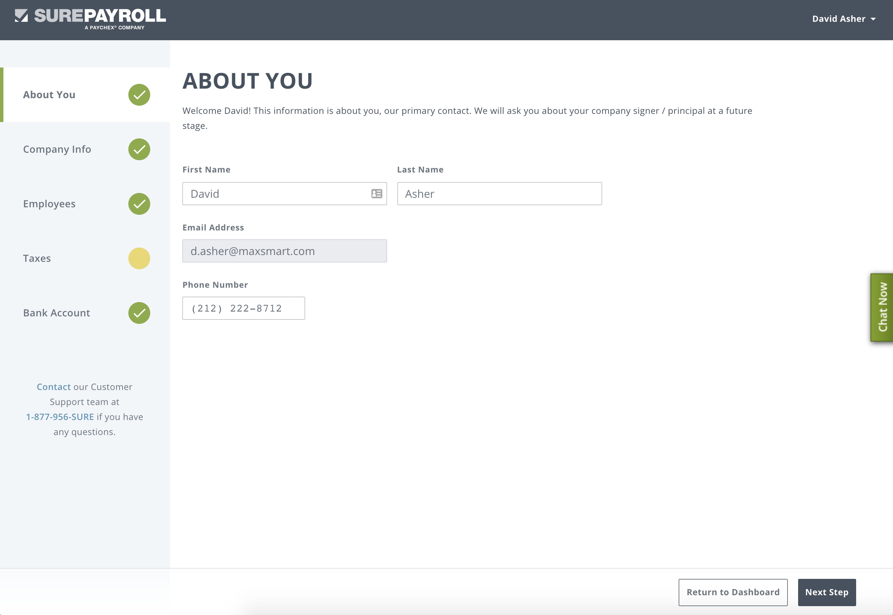

Overview:
My time at sure payroll helped me grow as a designer by managing multiple projects and ultimately helping mentor new designers and user researchers.
Role:
User Experience Design
User Research
UI Development
Earnings and Deductions Entry
Problem:
Users need to call our sales team and the sales team would then need to manually add the earnings and deductions. This is a significant pain point and forces users to go through multiple steps in order to complete their task.
Design Process:
After meeting with the sales team and understanding the user journey I was able to create wireframes to reduce pain points.


Validation:
I recruited 8 business owners to validate the finished design and take note of any pain points for future iterations.


E-commcerce
Problem:
The current process for a new user to enroll in SureParyoll required many touch points with the sales team. This feature enabled users to enroll themselves online.
Design Process:
I uncovered more information about the enrollment process from sales and customer service to understand the painpoints in the lengthy process.


Final Design:
We decided that a best approach broke down the process into digestable chunks which allows the user to leave the experience and come back whenever they want to.

Reesults
We were able to increase online ecommerce enrollment by 19% with the new e-commerce navigation redesign.
Reflection
Working at SurePayroll helped me enhance my design skills and I was able to gain experience in mentoring which I found very rewarding.
BONUS Halloween
My team was very competitive with our office halloween costume and wanted to share it here. It was such a fun way to explore our creativity.
Coco Inspired

Harry Potter Inspired